STL SGI 2.9.2版本源码中vector的实现细节。
1 | /* |
向可变数组中position指定的位置之后加入n个元素x_copy。
插入点之后的元素个数大于等于新增元素个数n
n=3，elems_after=7，x_copy = 17。
假设vector的当前状态如下：
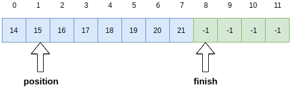
执行uninitialized_copy(finish - n, finish, finish);之后
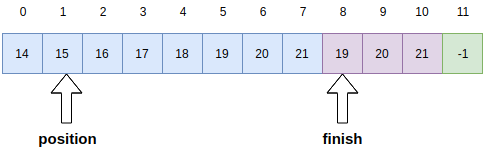
执行finish += n;之后，
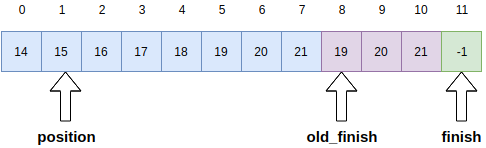
执行copy_backward(position, old_finish - n, old_finish);之后，
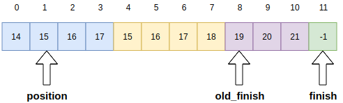
执行fill(position, position + n, x_copy);之后，
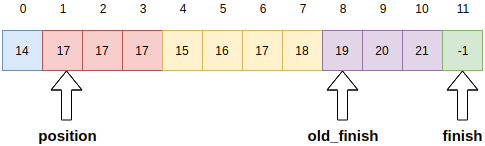
插入点之后的元素个数小于新增元素个数n
n=3, elems_after = 2, x_copy = 17。
假设vector的当前状态为：
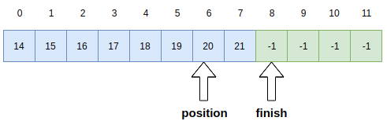
执行uninitialized_fill_n(finish, n - elems_after, x_copy);后的状态：
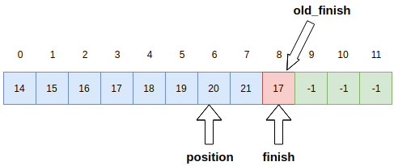
执行finish += n - elems_after;后
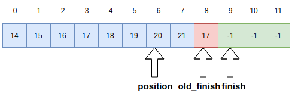
执行uninitialized_copy(position, old_finish, finish);后
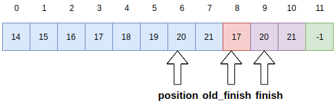
执行finish += elems_after;后
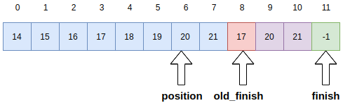
执行fill(position, old_finish, x_copy);后
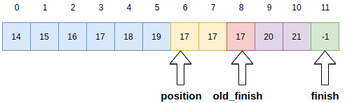